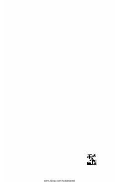

OVOybekning «Oltin vodiydan shabadalar» romani kiritilgan mukammal asarlar to'plamining 7-tomidir.
Ushbu kitob taniqli o'zbek yozuvchisi Oybekning mukammal asarlar to'plamining ettinchi jomi bo'lib, uning mashhur «Oltin vodiydan shabadalar» romanini o'z ichiga oladi. Asar o'zbek xalqining hayoti, qishloqdagi o'zgarishlar va davr muhitini yorqin tasvirlaydi.